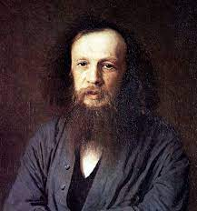
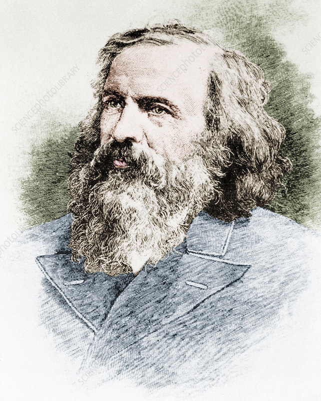
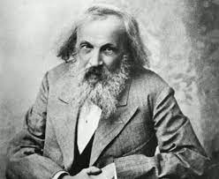
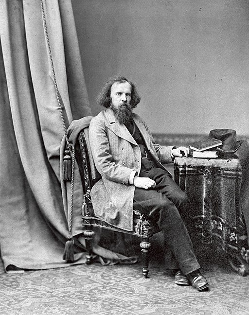

Dmitri Mendeleev
Russian scientist
.jpg)
Dmitri Mendeleev, Russian in full Dmitry Ivanovich Mendeleyev, (born January 27 (February 8, New Style), 1834, Tobolsk, Siberia, Russian Empire—died January 20 (February 2), 1907, St. Petersburg, Russia), Russian chemist who developed the periodic classification of the elements. Mendeleev found that, when all the known chemical elements were arranged in order of increasing atomic weight, the resulting table displayed a recurring pattern, or periodicity, of properties within groups of elements. In his version of the periodic table of 1871, he left gaps in places where he believed unknown elements would find their place. He even predicted the likely properties of three of the potential elements. The subsequent proof of many of his predictions within his lifetime brought fame to Mendeleev as the founder of the periodic law.
Early life and Education
Mendeleev was born in the small Siberian town of Tobolsk as the last of 14 surviving children (or 13, depending on the source) of Ivan Pavlovich Mendeleev, a teacher at the local gymnasium, and Mariya Dmitriyevna Kornileva. Dmitri’s father became blind in the year of Dmitri’s birth and died in 1847. To support the family, his mother turned to operating a small glass factory owned by her family in a nearby town. The factory burned down in December 1848, and Dmitri’s mother took him to St. Petersburg, where he enrolled in the Main Pedagogical Institute. His mother died soon after, and Mendeleev graduated in 1855. He got his first teaching position at Simferopol in Crimea. He stayed there only two months and, after a short time at the lyceum of Odessa, decided to go back to St. Petersburg to continue his education. He received a master’s degree in 1856 and began to conduct research in organic chemistry. Financed by a government fellowship, he went to study abroad for two years at the University of Heidelberg. Instead of working closely with the prominent chemists of the university, including Robert Bunsen, Emil Erlenmeyer, and August Kekulé, he set up a laboratory in his own apartment. In September 1860 he attended the International Chemistry Congress in Karlsruhe, convened to discuss such crucial issues as atomic weights, chemical symbols, and chemical formulas. There he met and established contacts with many of Europe’s leading chemists. In later years Mendeleev would especially remember a paper circulated by the Italian chemist Stanislao Cannizzaro that clarified the notion of atomic weights. In 1861 Mendeleev returned to St. Petersburg, where he obtained a professorship at the Technological Institute in 1864. After the defense of his doctoral dissertation in 1865 he was appointed professor of chemical technology at the University of St. Petersburg (now St. Petersburg State University). He became professor of general chemistry in 1867 and continued to teach there until 1890.
Formulation of the Periodic law
As he began to teach inorganic chemistry, Mendeleev could not find a textbook that met his needs. Since he had already published a textbook on organic chemistry in 1861 that had been awarded the prestigious Demidov Prize, he set out to write another one. The result was Osnovy khimii (1868–71; The Principles of Chemistry), which became a classic, running through many editions and many translations. When Mendeleev began to compose the chapter on the halogen elements (chlorine and its analogs) at the end of the first volume, he compared the properties of this group of elements to those of the group of alkali metals such as sodium. Within these two groups of dissimilar elements, he discovered similarities in the progression of atomic weights, and he wondered if other groups of elements exhibited similar properties. After studying the alkaline earths, Mendeleev established that the order of atomic weights could be used not only to arrange the elements within each group but also to arrange the groups themselves. Thus, in his effort to make sense of the extensive knowledge that already existed of the chemical and physical properties of the chemical elements and their compounds, Mendeleev discovered the periodic law. His newly formulated law was announced before the Russian Chemical Society in March 1869 with the statement “elements arranged according to the value of their atomic weights present a clear periodicity of properties.” Mendeleev’s law allowed him to build up a systematic table of all the 70 elements then known. He had such faith in the validity of the periodic law that he proposed changes to the generally accepted values for the atomic weight of a few elements and predicted the locations within the table of unknown elements together with their properties. At first the periodic system did not raise interest among chemists. However, with the discovery of the predicted elements, notably gallium in 1875, scandium in 1879, and germanium in 1886, it began to win wide acceptance. Gradually the periodic law and table became the framework for a great part of chemical theory. By the time Mendeleev died in 1907, he enjoyed international recognition and had received distinctions and awards from many countries.
Other scientific achievements of Dmitri Mendeleev
Since Mendeleev is best known today as the discoverer of the periodic law, his chemical career is often viewed as a long process of maturation of his main discovery. Indeed, in the three decades following his discovery, Mendeleev himself offered many recollections suggesting that there had been a remarkable continuity in his career, from his early dissertations on isomorphism and specific volumes (for graduation and his master’s degree), which involved the study of the relations between various properties of chemical substances, to the periodic law itself. In this account, Mendeleev mentioned the Karlsruhe congress as the major event that led him to the discovery of the relations between atomic weights and chemical properties. However, this retrospective impression of a continuous research program is misleading, since one striking feature of Mendeleev’s long career is the diversity of his activities. First, in the field of chemical science, Mendeleev made various contributions. In the field of physical chemistry, for instance, he conducted a broad research program throughout his career that focused on gases and liquids. In 1860, while working in Heidelberg, he defined the “absolute point of ebullition” (the point at which a gas in a container will condense to a liquid solely by the application of pressure). In 1864 he formulated a theory (subsequently discredited) that solutions are chemical combinations in fixed proportions. In 1871, as he published the final volume of the first edition of his Principles of Chemistry, he was investigating the elasticity of gases and gave a formula for their deviation from Boyle’s law, the principle that the volume of a gas varies inversely with its pressure. In the 1880s he studied the thermal expansion of liquids. A second major feature of Mendeleev’s scientific work is his theoretical inclinations. From the beginning of his career, he continually sought to shape a broad theoretical scheme in the tradition of natural philosophy. This effort can be seen in his early adoption of the type theory of the French chemist Charles Gerhardt and in his rejection of electrochemical dualism as suggested by the great Swedish chemist Jöns Jacob Berzelius. All his efforts were not equally successful. He based his 1861 organic chemistry textbook on a “theory of limits” (that the percentage of oxygen, hydrogen, and nitrogen could not exceed certain amounts in combination with carbon), and he defended this theory against the more popular structural theory of his countryman Aleksandr Butlerov. Because of his antipathy to electrochemistry, he later opposed the Swedish chemist Svante Arrhenius’s ionic theory of solutions. Before and during Mendeleev’s time, many attempts at classifying the elements were based on the hypothesis of the English chemist William Prout that all elements derived from a unique primary matter. Mendeleev insisted that elements were true individuals, and he fought against those who, like the British scientist William Crookes, used his periodic system in support of Prout’s hypothesis. With the discovery of electrons and radioactivity in the 1890s, Mendeleev perceived a threat to his theory of the individuality of elements. In Popytka khimicheskogo ponimania mirovogo efira (1902; An Attempt Towards a Chemical Conception of the Ether), he explained these phenomena as movements of ether around heavy atoms, and he tried to classify ether as a chemical element above the group of inert gases (or noble gases). This bold (and ultimately discredited) hypothesis was part of Mendeleev’s project of extending Newton’s mechanics to chemistry in an attempt to unify the natural sciences.
Activities outside the laboratory
Mendeleev carried on many other activities outside academic research and teaching. He was one of the founders of the Russian Chemical Society (now the Mendeleev Russian Chemical Society) in 1868 and published most of his later papers in its journal. He was a prolific thinker and writer. His published works include 400 books and articles, and numerous unpublished manuscripts are kept to this day in the Dmitri Mendeleev Museum and Archives at St. Petersburg State University. In addition, in order to earn money he started writing articles on popular science and technology for journals and encyclopaedias as early as 1859. His interest in spreading scientific and technological knowledge was such that he continued popular science writing until the end of his career, taking part in the project of the Brockhaus Enzyklopädie and launching a series of publications entitled Biblioteka promyshlennykh znany (“Library of Industrial Knowledge”) in the 1890s. Another interest, that of developing the agricultural and industrial resources of Russia, began to occupy Mendeleev in the 1860s and grew to become one of his major preoccupations. He wrote projects to develop a coal industry in the Donets Basin, and he traveled to both Baku in Azerbaijan (then part of the Russian Empire) and to Pennsylvania in the United States in order to learn more about the petroleum industry. All told, he may have devoted more time to questions of national economy than to pure chemistry.Like his lifelong commitment to the industrial development of Russia, Mendeleev’s philosophical views may have been rooted in his family background in Siberia. However, it seems he developed a metaphysics of his own through his daily experience. In the 1870s the visit of a famous medium to St. Petersburg drew him to publish a number of harsh criticisms of “the apostles of spiritualism.” In March 1890, Mendeleev had to resign from his chair at the university following his support of protesting students, and he started a second career. He first acted as a government consultant until he was appointed director of the Central Bureau of Weights and Measures, created in 1893. There he made significant contributions to metrology. Refusing to content himself solely with the managerial aspect of his position (which involved the renewal of the prototypes of length and weight and the determination of standards), he purchased expensive precision instruments, enlarged the team of the bureau, and conducted extensive research on metrology. After a few years he published an independent journal of metrology. Thus, Mendeleev was able to combine his lifetime interests in science and industry and to achieve one of his main goals: integrating Russia into the Western world. Bernadette Bensaude-Vincent